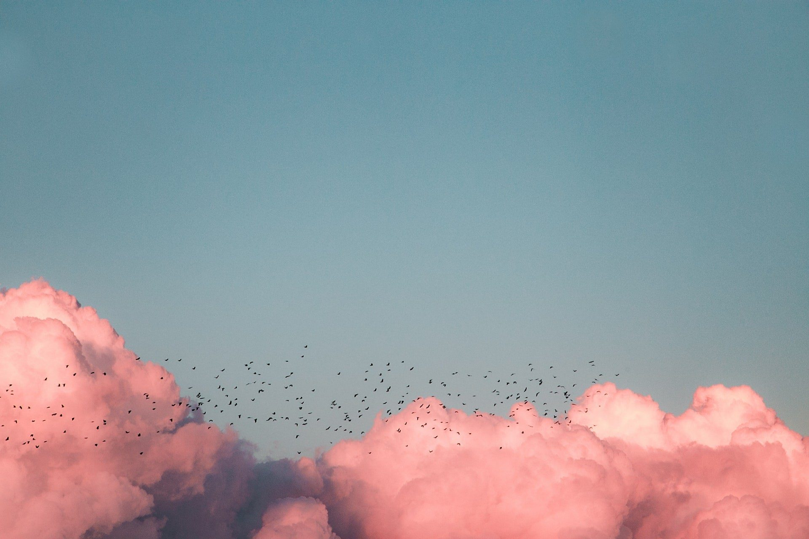

Een persoonlijke fotofilm voor het afscheid
Wilt u een fotofilm voor de uitvaart laten maken? Wij maken van uw foto’s, filmpjes en muziek een rustige, persoonlijke film, binnen 12 uur klaar voor de ceremonie.

Wat is een fotofilm voor de uitvaart?
Een fotofilm is een film van foto’s en soms korte filmpjes uit het leven van uw dierbare, gemonteerd op muziek die bij hem of haar past. Tijdens de uitvaart wordt de film op een scherm afgespeeld, vaak tussen de sprekers door of aan het einde van de plechtigheid. In een paar minuten ziet iedereen wie iemand was: van de kinderfoto’s tot de laatste jaren.
Voor familie is het een moment van herkenning, voor anderen een kennismaking. Veel nabestaanden bewaren de film daarna als herinnering, om terug te kijken of te delen met wie er niet bij kon zijn. Omdat wij het monteren overnemen, hoeft u in een drukke week alleen de beelden te verzamelen.
In drie stappen, zonder zorgen.
-
1
U neemt contact op
Bel, app of mail. We bespreken rustig uw wensen, de datum van de uitvaart en de muziek.
-
2
De familie deelt beelden
U ontvangt één link. Iedereen kan daar foto’s en filmpjes neerzetten, vanaf elke telefoon of computer.
-
3
Wij maken de film
Binnen 12 uur staat de film klaar. U bekijkt hem, geeft eventuele wijzigingen door en stuurt hem naar het uitvaartcentrum.
Waarom families een fotofilm laten maken
Een verhaal in beelden
Foto’s uit alle levensfasen, in een volgorde die klopt. Zo ontstaat een verhaal dat recht doet aan een heel leven.
Muziek die past
U kiest de nummers. Wij stemmen het tempo van de beelden daarop af, zodat film en muziek één geheel worden.
Zorg uit handen
Geen software en geen technische vragen. U deelt de beelden via één link, wij doen de rest.

Elke film is anders, net als ieder leven.
Klassiek, Modern of Vernieuwend. Alles is aan te passen aan wie uw dierbare was.
Alle voorbeeldenexcl. btw voor een persoonlijke fotofilm. Iedere extra fotofilm: €199 excl. btw.
Bekijk wat er inbegrepen is“Het was gisteren zo’n prachtig en eervol afscheid…veel mensen die mama niet of niet goed kenden kwamen naar ons toe met de opmerking dat ze mede door de filmpjes een heel goed beeld van mn moeder hadden gekregen!”
Veelgestelde vragen over een fotofilm voor de uitvaart
Hoe lang duurt een fotofilm voor de uitvaart?
Dat hangt af van het aantal foto’s en de muziek. Met 60 tot 80 foto’s duurt een film enkele minuten.
Hoeveel foto’s heb ik nodig?
Voor één film werken we met 60 tot 80 foto’s. Heeft u er meer of minder, overleg het gerust.
Hoe snel is de film klaar?
Binnen 12 uur nadat alle beelden binnen zijn. Liefst ontvangen we ze uiterlijk 24 uur voor de ceremonie; in overleg kan het tot 6 uur van tevoren.
Wat kost een fotofilm voor de uitvaart?
€399 excl. btw. Iedere extra fotofilm kost €199 excl. btw.
Hoe wordt de film afgespeeld?
U ontvangt een mp4-bestand dat op vrijwel elk scherm werkt. U stuurt het door naar het uitvaartcentrum; vraagt de locatie een ander formaat, dan zetten wij het om.